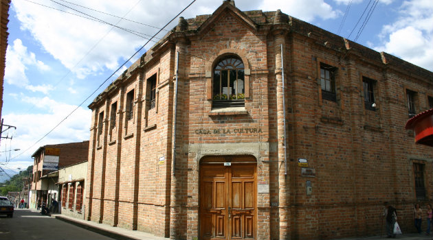
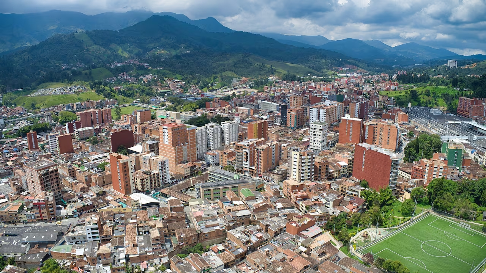

La Casa de la Cultura de Caldas, Antioquia, fue fundada en 1975 con el propósito de fomentar, preservar y difundir las manifestaciones artísticas y culturales del municipio. Desde sus inicios, se ha consolidado como el epicentro cultural de la región, brindando espacios para la formación, creación y exhibición del talento local.
Ubicada en un emblemático edificio que combina arquitectura tradicional y moderna, nuestra Casa de la Cultura ha sido testigo y partícipe del desarrollo cultural de generaciones de caldeños. A lo largo de los años, hemos ampliado nuestra oferta para incluir programas de formación en música, danza, teatro, artes plásticas y literatura.
Hoy en día, continuamos nuestra labor con el firme compromiso de ser un espacio abierto para todos, donde la cultura se vive, se comparte y se construye colectivamente.


Caldas es un municipio de Colombia ubicado en el departamento de Antioquia. Fundado en 1840, forma parte del área metropolitana del Valle de Aburrá. Su nombre rinde homenaje al científico y patriota Francisco José de Caldas.
Inicialmente, la economía de Caldas se basó en la agricultura y la minería, pero con el tiempo se ha transformado en un importante centro industrial y residencial. A pesar de su crecimiento urbanístico, el municipio ha sabido conservar sus tradiciones y valores culturales.
El patrimonio cultural de Caldas incluye festividades como las Fiestas de la Fruta y las Fiestas del Aguacate, así como manifestaciones artísticas que reflejan la identidad paisa y la herencia ancestral de sus habitantes.
El Parque Santander, en Caldas, nació como plaza en 1848, fue mercado y feria de ganado, y en 1923 se convirtió en parque. Desde 1940, con un busto de Santander, lleva su nombre actual.
El Parque Olaya Herrera surgió en 1911 con la estación del tren y tomó su nombre en 1937. Su busto, destruido en 1948, fue restaurado en 2007; también se le llama parque de la Locería o del Artista.
La Catedral Nuestra Señora de Las Mercedes empezó a construirse en 1870 y fue embellecida por Monseñor Álvarez Correa, quien la dotó de altar, coro, campanas y atrio. En 1988, con la creación de la diócesis, se convirtió en la catedral de Caldas.
El primer cementerio de Caldas se ubicó cerca del actual hospital y fue administrado por el municipio desde 1878. En 1945 inició la construcción del moderno camposanto, terminado por el presbítero Ernesto Betancur en el sitio donde hoy permanece.
La Locería Colombiana nació en 1931 tras la quiebra de la Fábrica de Loza de Caldas, heredando sus talleres y tradición ceramista. Bajo la familia Echavarría impulsó la industria y creó barrios obreros como Bellavista y Centenario.